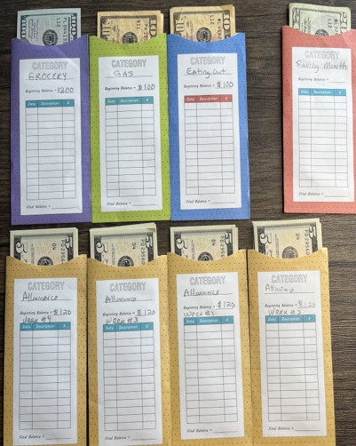
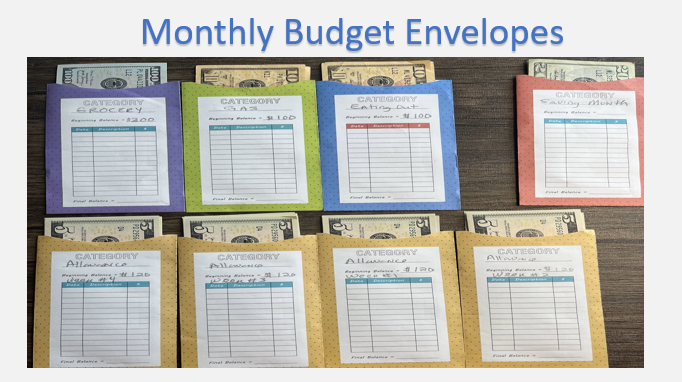

Now that you have filled your envelopes, you can manage and budget your money.
Note: Even though you may go to the bank monthly or bi-monthly, you should only carry some money. You should only have:
1 – Allowance Envelope a week
2 – Keep the gas envelope with enough money for gas in the car glovebox
3 – Pull out $100 weekly and take no credit cards to the grocery store.
4 – Decide how many days you can afford to eat out and take that amount out when you leave the house for dinner.
Find a secure spot in your home to keep your envelopes. The only envelopes you should have access to as you live your daily life are your allowance and gas envelopes. The grocery, eating out, and other weekly allowance envelopes should be in a secure place at home.
As you spend money from your envelopes, tracking your expenses is essential. Write down your amount and what you spent directly on the Envelope. This practice of tracking your expenses is invaluable. It gives you a clear picture of your financial situation and helps you make informed decisions. If you have money left over at the end of the week from your grocery or allowance budget envelopes, place that money in a savings envelope or pay it directly towards a credit card or loan bill. Even if you have .05 cents left over, pay that immediately towards a bill, it really adds up.
Note: Remember, the money must last until your next pay period. You should not carry all the money with you. This requires discipline and a strong commitment to your budget, but it will empower you to take control of your finances.

Step 6: Savings at the End of Month
Now that you have filled your envelopes, you can manage and budget your money.
Note: Even though you may go to the bank monthly or bi-monthly, you should only carry some money. You should only have:
1 – Allowance Envelope a week
2 – Keep the gas envelope with enough money for gas in the car glovebox
3 – Pull out $100 weekly and take no credit cards to the grocery store.
4 – Decide how many days you can afford to eat out and take that amount out when you leave the house for dinner.
Find a secure spot in your home to keep your envelopes. The only envelopes you should have access to as you live your daily life are your allowance and gas envelopes. The grocery, eating out, and other weekly allowance envelopes should be in a secure place at home.
As you spend money from your envelopes, tracking your expenses is essential. Write down your amount and what you spent directly on the Envelope. This practice of tracking your expenses is invaluable. It gives you a clear picture of your financial situation and helps you make informed decisions. If you have money left over at the end of the week from your grocery or allowance budget envelopes, place that money in a savings envelope or pay it directly towards a credit card or loan bill. Even if you have .05 cents left over, pay that immediately towards a bill, it really adds up.
Note: Remember, the money must last until your next pay period. You should not carry all the money with you. This requires discipline and a strong commitment to your budget, but it will empower you to take control of your finances.

Step 7: Savings at the End of Month
Once a week, evaluate your spending. If the envelope is empty before your next pay period, then you are done spending it in that category. Over time, it will get easier to manage. Place any amount of money you save each week into a savings account or envelope or pay towards a bill. You will be surprised how quickly the debt goes down, and the savings go up! More importantly, you will gain a sense of security and peace through managing your money.
